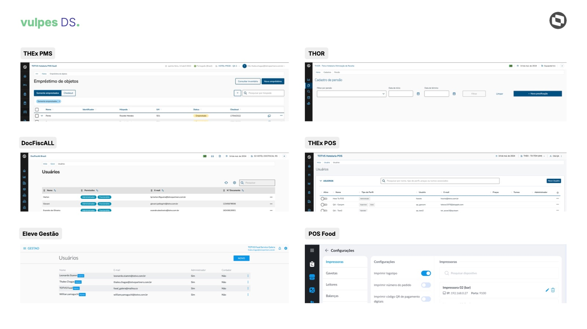
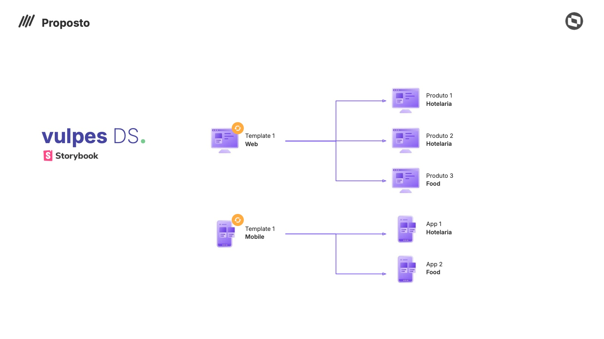
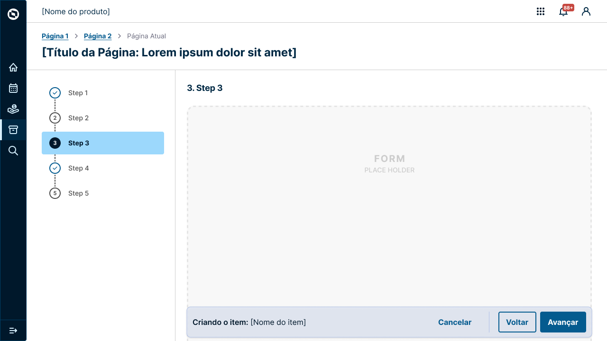

Vulpes DS: one design system for six products
The design system that unifies the interfaces of TOTVS Hospitality & Food — now used by all six products. I co-led it and designed its typography guide, form and vertical stepper templates, and calendar component.
Six products — THEx PMS, THOR, DocFiscALL, THEx POS, Eleve Gestão and POS Food — were built by different teams, each with its own screens and templates. The company framework (Animalia DS / PO UI) didn’t cover hospitality’s particularities, and every new screen meant rework.
The real problem: designers and developers didn’t speak the same language.

Extend the framework, don’t replace it
Built on Animalia DS with atomic design: atoms and molecules from the company, organisms, templates and pages tailored to hospitality.
Templates first
A single repository: one web and one mobile template feed every product, so an update reaches all of them at once. We started with the registration template, which every product has.
Design that speaks code
Layers named as in code, tokens visible in Dev Mode, components documented in Storybook.
A process shared with devs
One dual-track board (design → ready for dev → code → design review), biweekly syncs, and layouts informed by heatmaps and DataDog.

Four pieces of the system are mine from start to finish — all of them delivered:
01Typography guide
I mapped how type was used across our Figma files and proposed a single scale in Inter — five headings and body sizes from XL to Tiny — with rem values and rules for when to use each one.
02Form template
Simple forms, long forms with dividers and forms inside master-detail, with a fixed action bar and documented spacing rules (form gaps and container paddings).


03Vertical stepper template
For long creation flows: a linear version, where steps follow an order, and a non-linear one, where users can jump between steps.

04Calendar table component
A component to view and manage information by date, such as rates and discounts per day. Based on PO UI’s po-calendar, with day cells in four states and two sizes, simple or complex headers, and Bento and full-page layouts.

A shared language
A design system aligns designers and developers as much as it ships components.
Templates scale further
Consistency shows up when whole screens are shared, not only buttons.
Build with the company
Extending the corporate framework made Vulpes easier to adopt and defend.